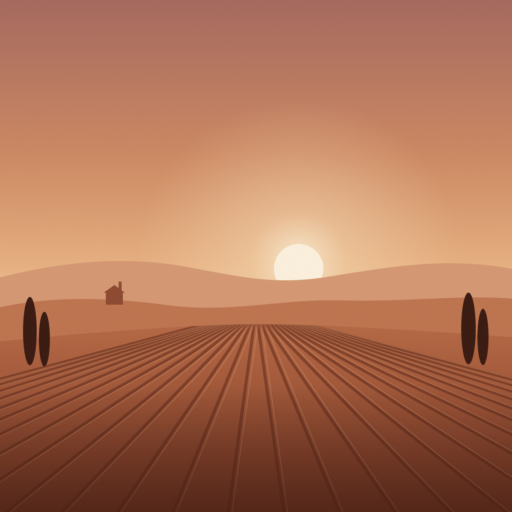

Chapter I
Madder Valley
Dye fields below the ridge, at the last hour of light.
The valley is where the colour comes from. Madder grows in the lower fields, walnut trees line the river, and weld seeds itself along every wall. This chapter is cut from wool and heavy linen, and dyed in all three.
Open Madder Valley